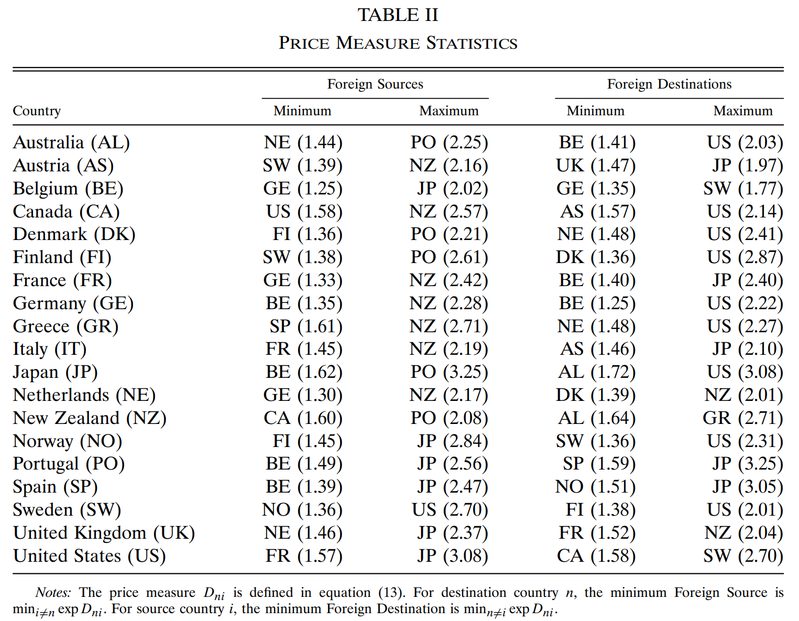

3 贸易、地理和价格初探
3.1 标准化的进口份额23
在(2.10)中取 \(n\) 为 \(i\)，然后再相除，得到
\[\begin{align} \frac{X_{n i} / X_{n}}{X_{i i} / X_{i}}=\frac{\Phi_{i}}{\Phi_{n}} d_{n i}^{-\theta}=\left(\frac{p_{i} d_{n i}}{p_{n}}\right)^{-\theta} \tag{3.1} \end{align}\]
(3.1)左边为 \(i\) 国在 \(n\) 国支出中的占比除以 \(i\) 国在 \(i\) 国支出中的占比，称为标准化的 \(n\) 国进口中来源于 \(i\) 国的份额（\(n\)’s normalized import share from \(i\)）。
- 这个值不会超过1。因为，\(\frac{X_{n i} / X_{n}}{X_{i i} / X_{i}}>1 \Rightarrow \frac{p_{i} d_{n i}}{p_{n}}<1\)，若该式成立，\(n\) 国消费的所有产品都可以从 \(i\) 国进口以节省开支（a purchaser in country \(n\) can always buy all her goods in \(i\) at a price index \(p_{i} d_{n i}\)），这与 \(n\) 国选择了最低价格是矛盾的。
- \(i\)’s normalized share in \(n\) 的性质
- \(p_i/p_n \uparrow\) 或 \(d_{ni} \uparrow\) 使标准化支出份额下降
- \(\theta \uparrow\) 反映比较优势减弱，可贸易范围减少，使标准化支出份额下降。
- \(p_i/p_n \uparrow\) 或 \(d_{ni} \uparrow\) 使标准化支出份额下降
3.2 估计 \(\theta\)
- 使用制造业进出口数据，毕竟是可贸易性相对比较强的产品
- 取50种产品在样本国家中的零售数据，并进行对数化处理：\(r_{n i}(j)=\ln p_{n}(j)-\ln p_{i}(j)\)。对这 50 种产品的 \(-r_{n i}(j)\) 取平均值，作为 \(p_i/p_n\)
- 用第二大24 的 \(r_{n i}(j)\) 代表 \(\ln d_{ni}\)。因为按照本文的理论，\(n\) 国从 \(i\) 国进口的产品 \(j\) 满足 \(r_{n i}(j)=\ln d_{ni}\)，\(n\) 国从第三国进口的产品 \(k\) 的价格比从 \(i\) 国进口更便宜，因此有 \(r_{n i}(k)<\ln d_{ni}\)，故选取最大的 \(r_{n i}\) 作为 \(\ln d_{ni}\) 的代理变量（proxy）。
- 最终，令
\[\begin{align} D_{n i} \equiv \max 2_{j}\left\{r_{n i}(j)\right\}-\frac{1}{50}\sum_{j=1}^{50}\left[r_{n i}(j)\right] \tag{3.2} \end{align}\]
作为 \(\ln ({p_{i} d_{n i}}/{p_{n}})\) 的代理变量（price measure）。\(exp(D_{n i})\) 表示一个 \(n\) 国人若全部从 \(i\) 国购买商品，比在本国购买会贵多少（a buyer who insisted on purchasing everything from source \(i\), relative to the actual price index in \(n\), the price index for a buyer purchasing each goodfrom the cheapest source）

有了贸易流量和 \({p_{i} d_{n i}}/{p_{n}}\) 的数据，便可以利用(3.1)估计 \(\theta\)，估计结果如图2：

利用 \(D_{ni}\) 代理变量估计 \(\theta\) 的值约为8.28.